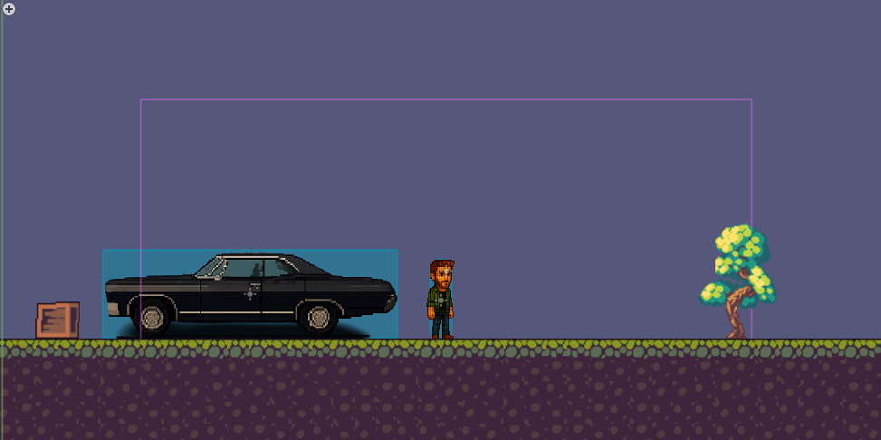
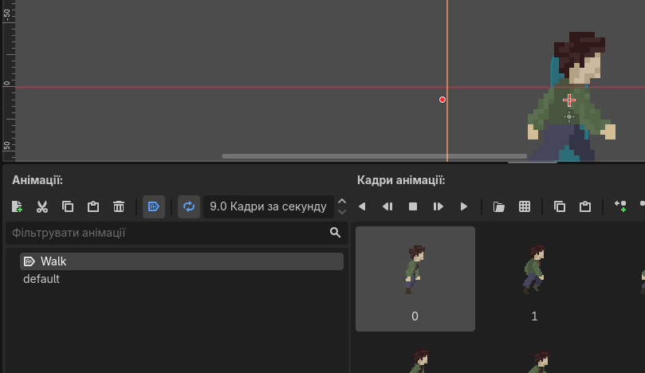

Новини про гру
четвер 6 лютого 2026 — створено картку(ідею) гри.
Жанр: side-scroller/Платформер
Загальна ідея: Гра про те як Дін Вінчестер не дочекавшись свого пирога, який мав купити Сем, сам пішов по нього, але на шляху його чекають перешкоди у виді гулів та демонів. Кінцева мета — дістатись магазину і взяти пирога.
Головний персонаж: Дін Вінчестер, завжди носить з собою свій Кольт М1911А1 начинений освяченими кулями та Мачете, може парирувати атаки, пригинатись, стрибати, ходити, взаємодіяти з об’єктами такими як двері.
Короткий опис: Дін попросив Сема щоб той прихопив йому пирога, але Сем забув про це і тепер розлючений Дін іде по нього сам. На його шляху трапляються різні тварюки, але вони його не зупинять. Шлях іде від їхнього бункера до магазинчика біля заправки.
Ціль гри/Умови виграшу: перемогти всю нечисть, з якої персонажу будуть випадати долари, але випадати вони можуть тільки з демонів.
Цільова платформа: PC/Android
| Персонажі | Вороги | Локації |
|---|---|---|
| Дін Вінчестер | Гулі | Заражена долина |
| Сем Вінчестер | Демони | Шлях повз старе шосе |
| Продавець Келл | - | Приміщення |
| Живі сутності та карти гри | ||
Середа 18 лютого 2026 — Ознайомлення з ігровим движком Godot
Створення гри буде йти в Godot
Godot Engine — відкритий кросплатформовий двовимірний і тривимірний ігровий движок під ліцензією MIT, який розробляється спільнотою Godot Engine Community...
Четвер 26 лютого 2026 — Створено початковий набросок локації з колізіями та тайлмапами.
Нововведення в проєкті
За останній час у грі було зроблено кілька важливих кроків:- Продумано базову локацію, яка стане основою для подальшого розвитку світу.
- Визначено стиль та зовнішність головного героя.
- Додано таймлайни для зручної роботи з подіями та анімаціями.
- Створено перші анімації для героя Діна Вінчестера.
- Встановлено розмір модельки персонажа — 48x48 пікселів, що забезпечить чіткість та відповідність обраному стилю.

Тимчасовий макет персонажа
Подальші плани
У найближчий час планується:- Додати всі базові анімації для головного героя.
- Завершити будівництво та продекорувати базову локацію, щоб надати їй завершеного вигляду.
- Створити модельки ворогів, а також інших важливих деталей, що доповнять ігровий світ.

Анімування руху персонажа